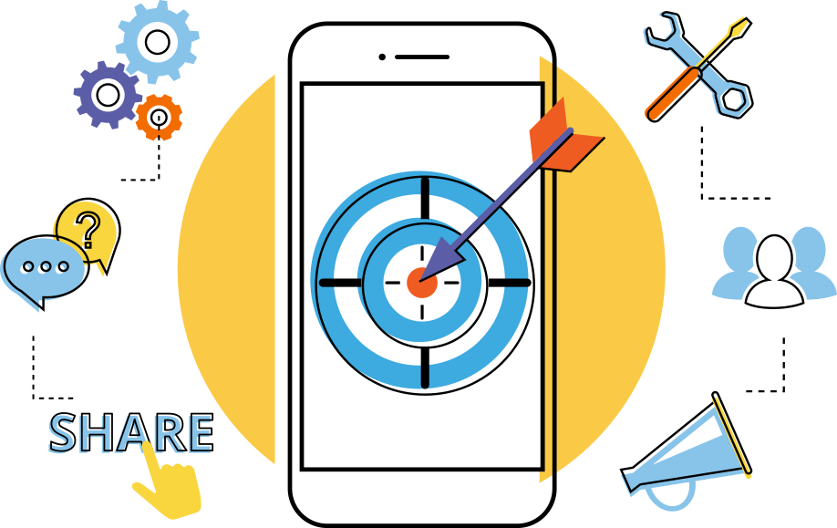

.svg)
Top AI applications in 2023
AI Application in E-Commerce: Artificial Intelligence technology is used to create recommendation engines through which you can engage better with your customers. These recommendations are made in accordance with their browsing history, preference, and interests. It helps in improving your relationship with your customers and their loyalty towards your brand.

Applications Of Artificial Intelligence in Education: Although the education sector is the one most influenced by humans, Artificial Intelligence has slowly begun to seep its roots into the education sector as well. Even in the education sector, this slow transition of Artificial Intelligence has helped increase productivity among faculties and helped them concentrate more on students than office or administration work.
Creating Smart Content: Digitization of content like video lectures, conferences, and textbook guides can be made using Artificial Intelligence. We can apply different interfaces like animations and learning content through customization for students from different grades.Artificial Intelligence helps create a rich learning experience by generating and providing audio and video summaries and integral lesson plans.
